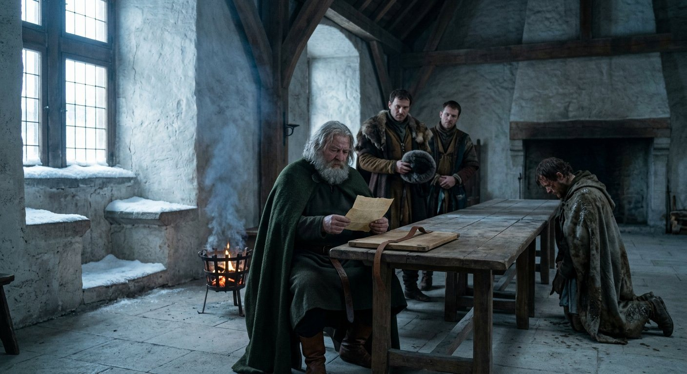
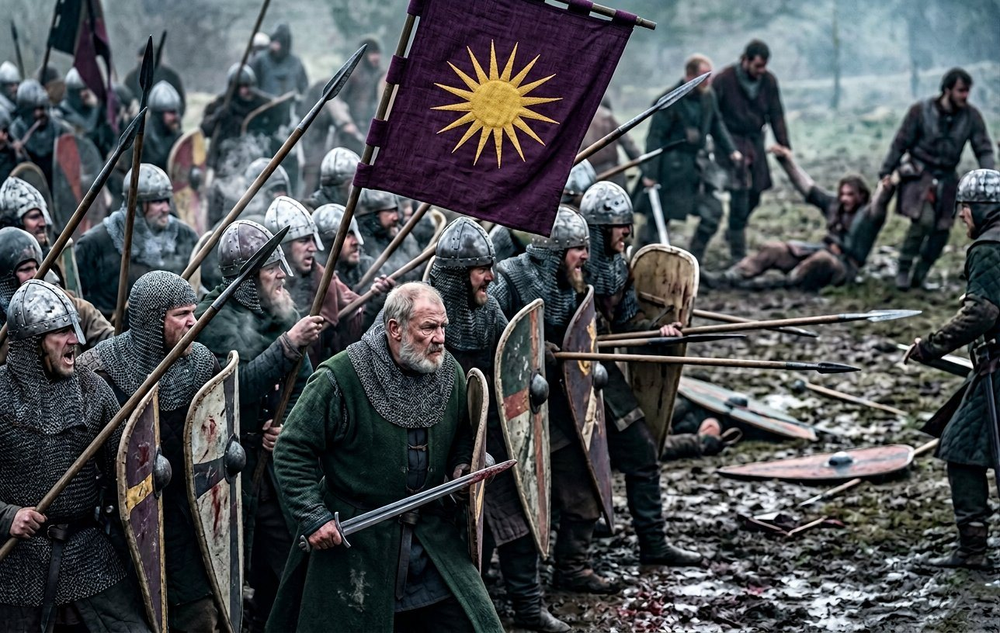
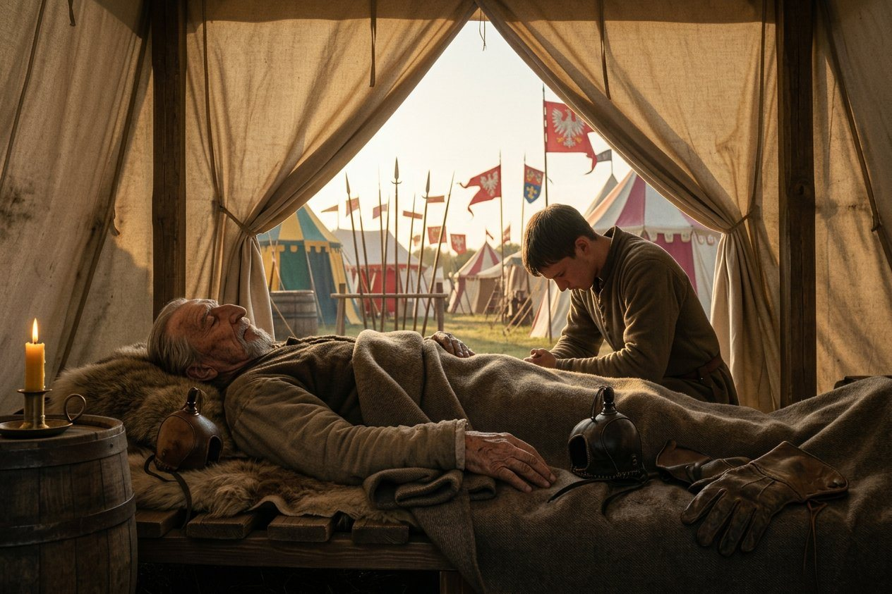
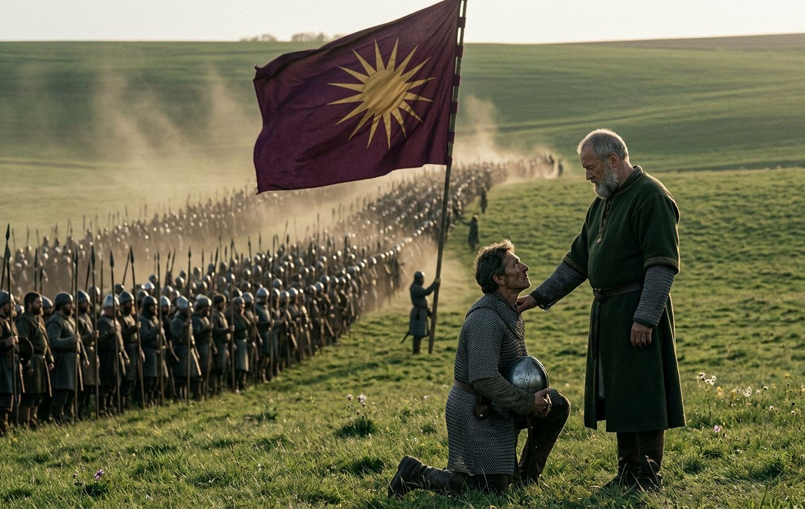
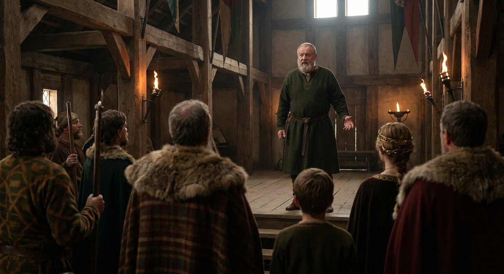
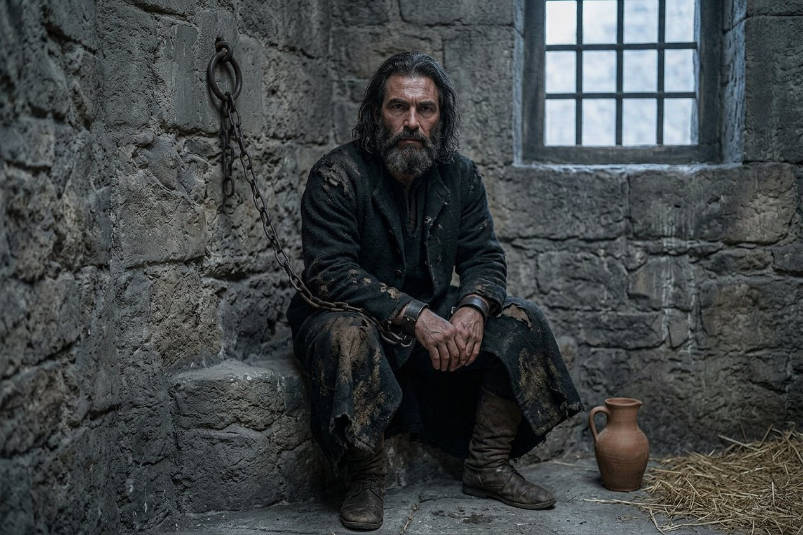
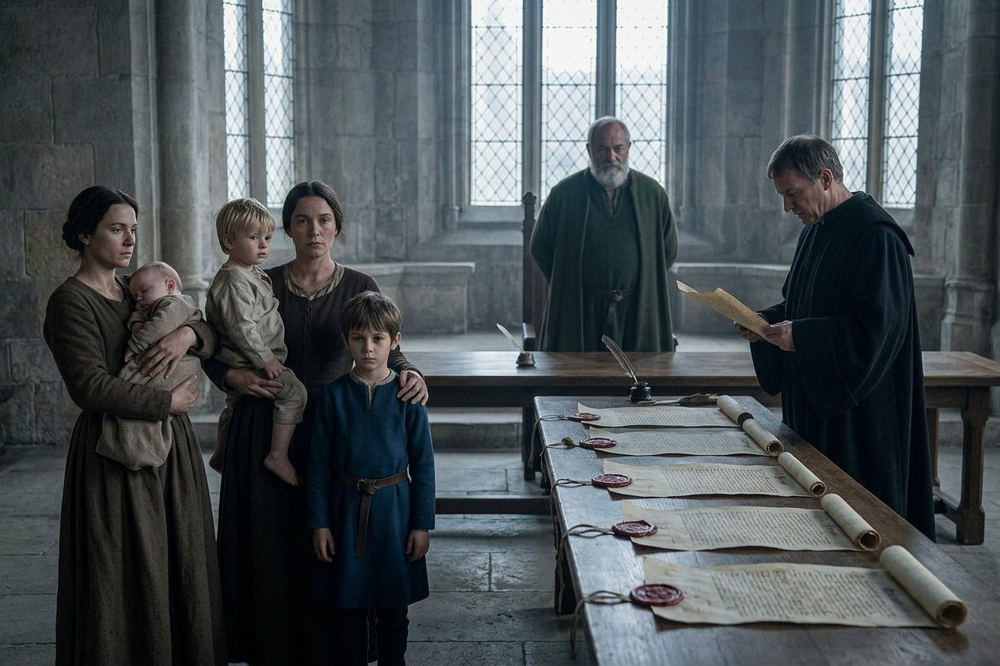
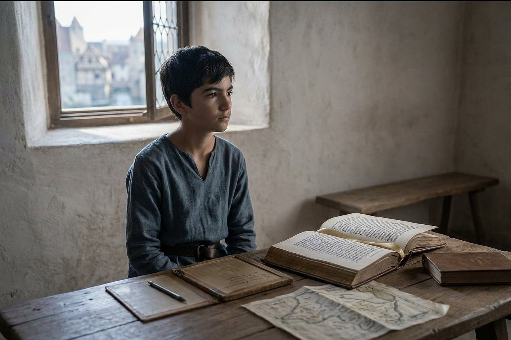
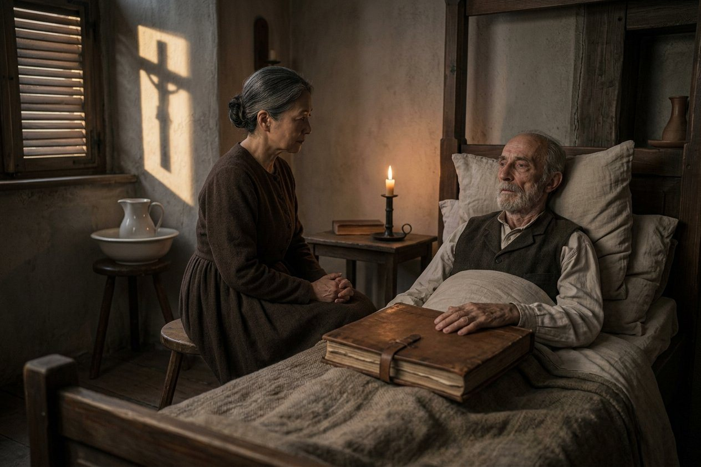
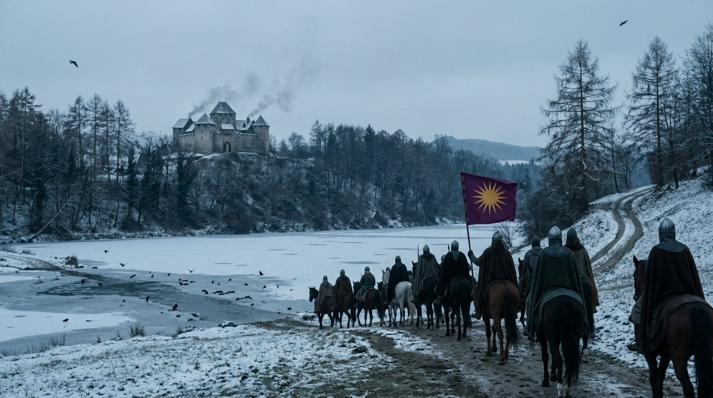

The man the record has been keeping for twenty years
On the fourth day of the twelfth month of 914 the kingdom declared war on Moravia, and the enemy was called Dobroslav, and I want to begin this chapter with him, because this book has met him before and no reader will remember it.
In the eighth month of 894 the company took a contract from Lampert, who was master of Visegrád by then and owed us a favour we were collecting, for the county of Hont, against a boy called Dobroslav, born in 878, sixteen years old, with a claim and a household and a great deal of other people's money behind him.
That was twenty years ago. He was a claimant with a household then; a nuisance with a name, the kind of enemy a company spends a season on and forgets, and I had forgotten him until the dispatch came in December, and then I went and found the entry in the ledger of 894 and looked at it for a while.
Born 878. Thirty-six years old in the winter of 914. In twenty years the nuisance with a household has become a kingdom with an army, and the Kingdom of Bavaria has decided to take his counties, and the war will be fought for two and a half years and will end with the man in irons.
I want the reader to hold two things at once here, because the second one is the whole of this chapter: a record that looks like a list of dates is also a list of the people it has been keeping alive. Dobroslav was sixteen in a page I wrote in my thirties. He is thirty-six in a war I am writing in my fifties, and there is no page in between, because a record does not follow a boy who loses.

He commanded the field himself, which is more than the King of Bavaria had done in four years, and I will say at the front what I have to say in the middle, which is that this was the last war in this book in which the King of Bavaria was in the line.
Lealdo, the twenty-third day of the twelfth month
Nineteen days after the declaration, on the twenty-third day of the twelfth month of 914, Martina was delivered of a son, and the record calls him Lealdo, and adds one word after the name: bastard.
I have written out the record's words in this book without softening them eleven times and I am not going to stop now, but I am going to put the man's own household beside the word, because a reader who has only the word will see a scandal and there was no scandal.
There was a room, a fire, a woman in her thirties who had been in the King's house since the fourth month of 909, a physician of fifty-five with a basin and a cloth, and a king of sixty-four who came in when it was over and stood at the foot of the bed and looked at the fourth child he had got in twenty-eight months.
Martina had borne Flavia in the eleventh month of 913 and had been made legitimate in a chancery, and now she had borne a son and the record had written the other word. I do not know why one and not the other and neither does anybody living. What I know is what I saw in the room, which was a woman looking at the word as it would later be written, because she could read and she had been in this household long enough to know how the chancery works.
The boy was called Lealdo. He is one year old when this chapter ends and he holds two Moravian counties before he can walk, and I will come to that.
Hohenau, the first day of the third month of 915
The first battle of the war was fought at Hohenau on the first day of the third month of 915, and the record gives the numbers, and they are the largest the book has yet carried.
Five thousand five hundred and seventy-two of ours. Two thousand seven hundred and fifty-one of his. Seventy-one of ours did not come off the field.
Seventy-one. I want the reader to have Lichtenfels next to it, which was three hundred and twelve, and Trubending, which was ten, and Stříbro, which was three. Seventy-one is not the worst day in this book; the worst day in this book is still Lengenfeld in 907 and I do not expect that to change. But seventy-one is the first time in six years that a day has cost us more than a skirmish's worth of men, and the arithmetic shows what the difference is between a raid and a war: a claimant who has grown into a kingdom can put a line into the field that holds long enough to be killed in.
The record gives our dead and not theirs. I was at Hohenau and I can tell the reader what I saw of the field afterwards, and I am not going to turn it into a number, because a woman who has walked a field with a board of names is the last person in the world who should be allowed to guess.

The King of Bavaria was in the line. I have thought a great deal about how to write that sentence, because after 912 this book has been written by a woman watching a king be carried from place to place while other men fight, and I had begun to think of him as cargo.
He was not cargo at Hohenau. He was sixty-four years old with a sword he could still lift and a chest that had had a year of coughing in it, and he put himself in the second line rather than the first, which is the compromise of a man who knows what he is worth and knows what he is no longer worth, and he came off the field with nothing worse than a cut on the forearm and a voice gone from shouting.
Seventy-one men died that day and one of them was a smith's apprentice from the second forge, a boy of nineteen called Vuk, whose name I have not written in this book before and am writing now because I am the one who has to.
Balc, the twenty-eighth day of the fourth month
Balc died on the twenty-eighth day of the fourth month of 915, of old age, at Kruszwica in Poland, at a tournament.
I have to be careful here, because I have loved this man since I was twenty-three and the record gives his death in six words.
Balc came into this company in the winter of 863 with Ana, when Ana was twenty-one and Balc was twenty-seven, and he had been a hunter before he was a thief before he was a soldier, and he was the first person in this company who ever told me the truth about a horse.
He was in the company thirty years. He was at every battle in this book that has a name and at about ninety that do not. He went to Rome in 908 at seventy-one and carried his own pack and complained about the price of wine in Kufstein. He was a Seducer and a braggart and a bad loser and the best hand with a hawk I have ever seen, and he never in thirty years asked for anything except to be in the next one.
He was seventy-eight. He died at a tournament in Poland in the spring of 915, in a tent, of nothing in particular, in the way that a man of seventy-eight dies, and the record's phrase for it is two words: old age.
I was not with him. I was at Regensburg with the ledger, and the news came in the fifth month in a letter from a man of the household, and I read it standing up in the yard and then I went and sat down on the mounting block and stayed there for a while, and Stoyanka found me there and did not say anything and went away again, which is the whole of what a good apprentice is.

Here is what I have decided to write about Balc, having written and cut four longer things. He joined a company of seventy men in a bad year and he died in a tent at a tournament in Poland with the company at two thousand and a kingdom behind it, and in between he did not change. That is not a small thing. Most of the people in this book were made by the company; Balc was the same man in 915 as he was in 863, and the company was made by him and by about forty others like him, and there are now four people left who would know what that means.
The accolade, the eleventh day of the fifth month
On the eleventh day of the fifth month of 915, thirteen days after Balc died, Benedetto was acclaimed First of the Vanguard.
I want to explain both halves of that sentence, because neither is obvious.
The First of the Vanguard is the realm's only accolade. It is not a title and it is not a county; it is a thing the crown says out loud in front of the army, once, to one man, and it means what it sounds like: when the line goes forward, that man goes in front of it. It had been held since the thirtieth day of the first month of 908 by Adam Frankopan, who came into this company in the eleventh month of 902 at nineteen, a head taller than any man in it, and who had held the accolade for seven years.
Adam had it and Benedetto was given it, and the record does not say what happened to Adam, and I am not going to invent a quarrel or a death. What I know is that Adam was thirty-two in 915 and had been in front of the line for seven years, and that a man who has done that for seven years does not lose an accolade because he has become worse at it. I think he lost it because he had become too valuable to spend, and I mark that as my reading and not the record's.

Benedetto came into this company on the first day of the twelfth month of 908, in the yard of an inn at Orvieto, with a helmet that fitted him and nothing else. I wrote that sentence in the nineteenth chapter and I wrote that I did not take to him, and I said that a reader coming to this page later should know that in the yard at Orvieto he and Hippokrates were two men with a mule between them and nobody in the company knew their names.
Six and a half years. That is how long it took for a soldier of the Italian country with a fitting helmet to become the man who goes in front of the line, in an army of two thousand, in a kingdom that has never once given him a county.
The record adds that the quality of the accolade is now called Valiant. I do not know what that means either, and I have decided not to be clever about it. What I will write is that on the eleventh day of the fifth month of 915 two things were true at once: the best soldier in the realm had no land, and six men who could not walk had six counties. That is the shape of this kingdom and I have been trying to draw it for four chapters.
Tonaguana, three days later
On the twelfth day of the fifth month of 915, Tonaguana was killed in a siege.
The record gives that and the date and nothing else. It does not give the country, the town, the enemy, or what a friend of the King of Bavaria was doing in a siege in the year 915.
Tonaguana was one of the two friends he made at Tunis in the summer of 913, in the chapter before this one, and the record gave me the name and the word friend and stopped, exactly as it has stopped here. I wrote in that chapter that two names and a word is what a friendship looks like in a record, and that the record has no room for what men say to each other in a courtyard at night in a country that is not theirs.
I was wrong about one thing. I wrote it as though the record were ungenerous. It is not ungenerous; it is short. A man makes a friend in Africa in 913, and two years later the friend is dead in a siege in a country nobody wrote down, and the record does one line and moves to the accolade, and the one line is not the record being cold. It is the record being honest about how much of a life it can carry.
The King was told in the sixth month, at Kruszwica, in the middle of a tournament, and he went and stood at the end of the lists for a while, and then he came back and did the next day of it. I was not there and I have this from two people, and both of them told me the same thing, which is that he said nothing at all.
Kruszwica
The grand tournament at Kruszwica in Poland ran from the second month of 915 to the eighth, and it was hosted by a king called Uniedrog, and on the thirtieth day of the sixth month the King of Bavaria won the Recital.
That is the second time. The first was at Győr on the eleventh day of the ninth month of 912, four months out of a bed, and I wrote then that I did not know what the piece was and was not going to invent one, and that what a recital costs a man is that he has to stand up in a hall and be judged on his memory in front of heralds.
He was sixty-five at Kruszwica. He had fought at Hohenau in the third month and buried Balc in the fourth month in a foreign country at a tournament, and he went into the lists again in the sixth and recited, and won.
I have wondered since whether he won it or whether the heralds of Poland gave it to a king at his own tournament, and I have no way of knowing and neither does anybody. What I do know is that a man of sixty-five who had just buried the oldest friend he had in the world did not have to do it. He could have sat in the stand and watched younger men be judged and nobody in that country would have thought less of him.
The Recital is the only contest in a tournament that a man can lose without being hurt, and that is exactly why it is the one he kept entering. I have written that a king's courage is not in question in this book; what was in question, from 911, was whether his body had left him. Győr was the first answer and Kruszwica was the second, and the second was given in a hall in Poland with a dead friend in the ground outside.

I will put down one thing about the Recital at Kruszwica that is not about the King. There were four of our people entered in it, which the record does not say and I know because I entered them: two of the Hungarian lords, a priest of the household who had a piece of Gregory by heart, and a man of the second forge who was illiterate and had learned a hundred lines of Homer in Greek by ear from Chrysogonos, and who came fourth, and who was, by the judgement of everybody at our table, robbed.
Wien, the first day of the tenth month of 915
On the first day of the tenth month of 915 the war was fought again at Wien, and the record gives the place and the date and nothing else at all: no numbers, no losses, no result.
The war was won. That much can be said, because the record ends it, and because a kingdom does not take six counties off an enemy it has not beaten. So Wien was a victory and I can tell the reader nothing about it, and the temptation is to make it a great one, and I am not going to.
I have one thing and it is small. Wien is a town on the Danube that the company passed through in the eighties, and Chrysogonos wrote four pages about it in the first volume because he liked the wine, and he was sixty-five in 915 and did not go to Wien. The last battle of this war was fought in a town that this book has already described by a man who was not there for it either, and if that is all the record gives, that is what I have.
Anthis, the twenty-third day of the first month of 916
On the twenty-third day of the first month of 916, Uta was delivered of a daughter, and the record calls her Anthis.
Uta came into this company at Salzburg in the eleventh month of 903, twenty-two years old, out of a family from the river country and a bad marriage the record does not describe. She bore Lysistratos on the seventh day of the second month of 907 and the record marked him as the child of a concubine, and he was given away four months later to a county in Steyermark that he has never seen.
Then nothing for nine years. Nine years, in a household where the Queen had borne four children and Martina two and Uta one, and Uta's one was a lord of something at four months old and had not been mentioned since.
And on the twenty-third day of the first month of 916 she had a daughter, at thirty-five, and the record gives the name and the mother and the date, and I was there, and I will write what I saw, which is a woman of thirty-five holding a child she had waited nine years for and saying, out loud, in front of me and two servants: this one stays with me.
I have thought about that sentence for a year. She was not asking. Anthis is one year old when this chapter ends and she is in her mother's rooms at Regensburg and she has no county and no title and no marriage spoken of, and as far as the record is concerned that is the whole of her, and as far as her mother was concerned it was the point.
Dobroslav in irons, the thirtieth day of the third month of 916
On the thirtieth day of the third month of 916, Dobroslav was taken and imprisoned.
The war had run fifteen months and had cost us seventy-one men at Hohenau and an unknown number at Wien and a great deal of money, and it ended with a man in irons, and the record does not say where he was taken or by whom, and I am not going to invent a wall and a tower for him.
I want to say what I think about the end of a war like this, and I want to mark it as mine, because it is the thing this chapter is actually about.
Dobroslav was born in 878. He was sixteen when this company fought him for the county of Hont in 894, and thirty-eight when the Kingdom of Bavaria took his country off him in 916, and he will be in irons for as long as the record cares to mention him, and it will not mention him again. A man's whole life, and it comes to two entries twenty-two years apart in two different ledgers written by two different hands.
I am not writing an elegy for him. He was a lord with a claim and an army and he lost, and if he had won there would be a Moravian record with my King's name in it as a nuisance of 916, and it would be one line long.

What I am writing is that the ledger is not the life. I have kept this book for nine years and I have written thousands of names in it and every one of them was a person with a morning and a bad knee and somebody they were afraid of, and the record keeps the two entries and I have to keep the rest, and I do not always succeed. That is the trade. Nobody warned me about that part of it.
Six counties to infants
On the sixth day of the fourth month of 916, a week after the man was taken, the counties were handed out, and I am going to give the whole of it because the whole of it is the argument.
Brno and Přerov to Philotas, who was two.
Olomouc and Opava to Lealdo, who was one, and who had been born on the twenty-third day of the twelfth month of 914 and whose name the record had written the word bastard beside.
Jihlava and Znojmo to Euthykrates, who was eight.
Six counties of Moravia, in one day, to three children whose combined age was eleven.

The Kingdom of Bavaria now rules sixty-nine counties and is the ninth largest realm in the world, and the record says that too, in a line, as though a clerk had counted them and wanted the number on the page.
I have said in this book that the King is building a family rather than a country, and I have said that nobody was raising the heir, and I am going to put the two sentences together here where the reader can see what they make.
His eldest son was fourteen in the fourth month of 916. Antiphates had been in the record since 902 as a name in a birth line, and at fourteen he had a book of prices, a Latin priest, a mule of his own, and — I have gone through the ledger twice — not one foot of land. Not a county, not a castle, not a mill.
And Moravia went to a baby of one, a baby of two, and a boy of eight.
I want to be careful here, because it would be easy to write this as a conspiracy and I do not think it was one. Three of those six counties had to go to somebody, and the somebody had to be a person the crown could not lose, and in a kingdom of this kind the only people the crown cannot lose are its own children. The Queen's son, the Italian woman's son, the German woman's son by another father's county — it is not a plan, it is a habit, and the habit is: give it to a child, because a child cannot rebel.
Antiphates could. That is the whole of it. A boy of fourteen who has been in the room since he was six is the one person in the realm who can grow up and take something, and a father who has spent twenty years being tolerated by his lords is not going to hand the heir a province and find out.

I have written this without asking him and I am going to leave it standing, because this book is mine and he is fifteen now and reads Latin and will one day read this. If I am wrong I would rather be wrong on the page where he can find it than polite in a paragraph that says nothing.
Chrysogonos, the third day of the ninth month of 916
On the third day of the ninth month of 916, Chrysogonos died of old age at Regensburg. He was sixty-six.
I have written death notices in this book for thirty years and I have never once dreaded one, and I have been dreading this since the fourth month of the year, when he stopped coming down to the yard.
Chrysogonos was a Roman Greek. He came into this company at Constantinople in the ninth month of 879, twenty-nine years old, a soldier since he was fifteen, and there were five of them that month — Evanthia, Eupraxia, Hippostrate, Ioanna and Chrysogonos — and none of the five believed one word of what the Captain believed, and he was the youngest of them and the only one who was never anything but cheerful about it.
He held the book. That is the thing that has to be written down properly, because it will be forgotten in fifty years and it is the whole of the man: from the day in the third month of 883 when the log changed hands at Constantinople to the first day of the sixth month of 907, when he handed it to me at the crown, Chrysogonos of the company kept this history. Twenty-four years. Volumes two and three, the whole of the hired sword and the whole of the kingdom, in a hand that got rounder as he got older.
I was his apprentice for eight years before I was his successor. He taught me the columns, which is to say he taught me that a man's pay is not a favour and a number is not an opinion, and he did it by making me do it wrong in front of him for eight years and never once doing it for me. When he handed the book over at Regensburg in 907 he said: it is only a board with a strap. And then he said: and it is the only thing in this company that will still be true in a hundred years, so mind the strap.

Here is what nobody writes down about a man like that. He was not a great soldier and he never commanded anything. He was in every battle in this book from 879 to 906 and the record does not give him a single act in any of them. He could not fight better than the men around him and he could not read a field and he was frightened of horses. What he could do was remember: he knew every man's name, every man's grievance, every debt in three currencies, and where every man's mother lived, and he had a system of marks in the margin of the ledger that nobody else could read and that I have not been able to change since, because I learned it from him and it is now how I think.
He was also the reason this company was never quite a mercenary company and never quite anything else. A Roman Greek of the Empire, in a company of Greeks and Bulgars and Chinese and Bavarians, who had been a soldier since he was fifteen and had nothing to say about it — and who wrote, every winter, in a bad hand, the story of a Japanese boy off a wreck. He believed none of what the Captain believed and he wrote it down for twenty-four years with more care than anybody who did.
He died in a bed in a house at Regensburg with four of us in the room. He had been failing since the spring and he knew it, and on the second day he asked for the book, and I brought him the book, and he did not read it. He put his hand flat on the cover and left it there for a while and then he said the only thing he said in the whole of that week, which was: good, the strap is still on.
The office was said over him by Yehudis, who is our physician and had been his friend for thirty-one years, and who said it in the way she says everything, properly and without ornament. Evanthia had gone out of the record years before and I do not know where she is. Eupraxia stayed in Rome in the third month of 909 and is alive there as far as the record says. Ioanna died in the twelfth month of 914. Hippostrate was murdered in 891. Of the five Greeks who came into this company at Constantinople in the ninth month of 879, one is left in the world and she is in Rome, and there is nobody left in this company who remembers that month, and I was not one of the five.
I have to write the sentence that goes here and I have been avoiding it for a paragraph. I am the last one who remembers the Constantinople of 879. There is no one left to check me. Every page I write from this day is a page that nobody in the world can contradict, and this book has been built for thirty years on the principle that a record can be checked by the people who were in it — and from the third day of the ninth month of 916 there is no such person in the company.
That is not a liberty. It is a grief, and it is also a warning, and I am putting the warning in the book where the reader can see it: what comes after this date is my hand and nobody's else.
László the Wolf, the twenty-fifth day of the eleventh month of 916
On the twenty-fifth day of the eleventh month of 916, László the Wolf died of old age, and his Carinthia passed to a man called Péter.
László Maróti came into this company in Rome in the seventh month of 897, fifty years old, a Hungarian with a bad reputation in three kingdoms and the manners of a man who had decided that a bad reputation is cheaper than a good one. He came with two horses, no servant and a story about a brother he had not killed and would not discuss, and he left it at that for nineteen years.
He left the company with the twelve at Regensburg on the first day of the sixth month of 907, and fifteen months later the record was calling him Prince László, and he had Carinthia, which is a Slav country with its own tongue and its own saints, and which the King had taken in the wars of 908 and had never intended to rule himself.
He was sixty-nine. He had been a prince for nine years and a bad man for fifty and a soldier of this company for ten, and I have no idea whether he was happy and I am not going to invent a deathbed.
The record gives one line, and the line has a name in it that has never been in this book before: Carinthia passed to Péter. It does not say who Péter is. It does not say whether he was a son, a nephew, a steward, a creditor, or the man who happened to be standing in the hall. I have asked two people who were in a position to know and neither of them knew, and this book is not going to give a stranger a father.

Here is what I will write instead, because it is the thing that struck me when I read the line. A county in this kingdom can pass from a man to a name in a single entry, and the entry does not have to say what the name is. That is how a state works and it is also how a state forgets. László the Wolf was in this book for nineteen years and his land went to a Péter in six words, and in a hundred years the six words will be the whole of him.
What the two years leave
Here is the count, and then I will put the pen down.
Two years. One war declared and won and an enemy of twenty years' standing in irons. Hohenau, which was the largest battle this book has yet carried and cost seventy-one men and a smith's apprentice called Vuk. Wien, of which nothing is known. Six counties to three children. A realm of sixty-nine counties, the ninth largest in the world. A second Recital won at sixty-five. The accolade given to a soldier with no land, and taken from a giant who had held it for seven years and did not, as far as the record knows, say a word about it.
Balc, who came into this company in the winter of 863 and died in a tent in Poland at seventy-eight. Tonaguana, killed in a siege nobody wrote down. Chrysogonos, who held this book for twenty-four years and let go of the strap on the third day of the ninth month. László the Wolf, whose Carinthia went to a Péter. Lealdo, born in the twelfth month of 914 with a word beside his name, and Anthis, born in the first month of 916 to a woman who said out loud that this one stays with her.
And a boy of fourteen with a book of prices, who was given nothing.
I said in the twenty-first chapter that the last chapter of a volume is where a narrator stops being able to see, and this is the fifth of seven, and what I can see from here is a machine at the height of its powers and a family that has been arranged around it, and the two of them are not the same thing even though every page of this chapter says they are.
Sixty-nine counties, which is the record's own count and not mine. A king of sixty-six who has won two recitals and can still stand in a second line with a sword, and who has been in this book since he was sixteen years old on a beach in the dark.
He is not going to be in it much longer. I have not written that sentence in this book before and I am going to leave it where it is, on its own, because every careful thing I could add to it would be a way of taking it back.
*Here ends the fifth chapter of the fourth volume, at Regensburg in the twelfth month of the year of grace 916, in the hand of Matako of the company, who is fifty-seven and keeps the ledger now, and who is the last of the five and the last of the Constantinople hand.*